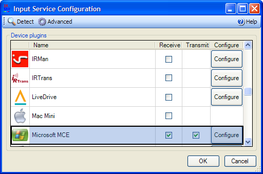

Input Service is the centre-piece of the system. As the name suggests, it is a windows service that provides access to the IR device. Other applications and plugins communicate with the Input Service to receive button press notification and to blast (transmit) or learn IR commands, communications is through TCP/IP on Port 24000.
Device plugin:
Choose the device(s) you want to use for receiving and the device you want to use for transmitting (blasting) by placing a mark in the box under the appropriate column. By double-clicking the device name in the device plugin list you can select both receiving and transmitting cabilities for that device at the same time. Note that you do not need to have a device selected in either column, that is, you can run the Input Service without a transmit, receive or either type of device enabled.
Click "Configure" to set any device specific options.
Mode:
This option sets the mode that the Input Service will operate in.
Use the Abstract Remote Model
This option enables Abstract Remote Model parsing. This feature converts button presses from a variety of recognised remotes into one common set of buttons. So for example, instead of two different remotes sending "57823" and "abab8238" as the remote button id for the Play button they would both be converted to simply "Play". This simplifies the configuration process but also keeps the initial flexibility of IR Server Suite because any button press that does not map to the Abstract Remote Model will continue to be handled in the old way.
This feature is disabled by default in Version 1.4.2 but will become enabled by default in later versions.
Set Priority:
This option lets you fine tune the process priority of the Input Service. If you find that your PC is running too slowly and remote input is delayed or performance is poor you might find that you will get a response rate increase by increasing the Process Priority of the Input Service.